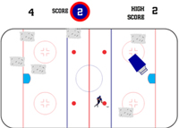

Flash based games and user experience
I've only very recently come into contact with ActionScript and the programming side to Flash, but it's something that I'm very interested in. I enjoy the wide range of things you can do with programming, whether it be adding interactivity to a website or creating a game. In fact, Game Design was a major I considered before committing to Interactive Media.
Zambonis
 This was the final project in my Programming for Digital Media course taken in the spring of 2010. There were no limitations to what we could for for the project; we could create anything we wanted. I decided to do a Zamboni game, where you had to clear off the ice before the time runs out. I thought it was pretty original. The project was done in Flash, using ActionScript 3.0, and utilizes classes and object oriented programming. Just a note: the high scores are kept every time the project is loaded.
The Girl From Last Night
 I wasn't sure if I should even include this project in my portfolio while I was working on it. Not because it's a bad project; it's actually a terrific project that is an unbelievably good example of what kind of work I can do. It's because this project is the most offensive, crude, immature thing I've ever created, let alone handed in for a grade. And it's also the best and most fun thing I've ever produced. Let me give you a little background.
I wasn't sure if I should even include this project in my portfolio while I was working on it. Not because it's a bad project; it's actually a terrific project that is an unbelievably good example of what kind of work I can do. It's because this project is the most offensive, crude, immature thing I've ever created, let alone handed in for a grade. And it's also the best and most fun thing I've ever produced. Let me give you a little background.
This was the final project for my Digital Narrative class taken in the spring of 2010. The assignment was, in our four-person groups, to create an interactive story where users dictate their overall experience. My group decided on a game-type interactive experience where the user can "play" as one of three characters the day after a big party that they don't remember, for alcohol induced reasons. In addition, all three characters are in search of a girl that they met. As the user traverses the environments, they encounter and interact with other characters. Based on the choices the user makes, your character will respond one of several ways to the dialog.
We decided to create a Flash website to do this, and I was put in charge of the programming. As we wanted the dialog and experience to be as realistic as possible while also being humorous, the entire project is filled with offensive stereotypes, sexual innuendos, and strong language. Overall, its some pretty mature content. Which brings me back to why I considered not including it. Of course, that was before we received very positive feedback from both professors and students after we handed the project in. So, here it is. I've warned you about the content, so enjoy at you're own risk. Oh, and if you're my mother, I would urge you to not play this game.
© braican.com 2010. Designed by Nicholas V. Braica
Blog powered by WordPress